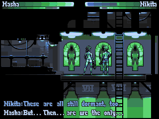
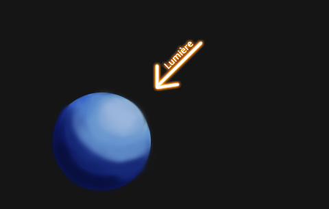
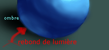
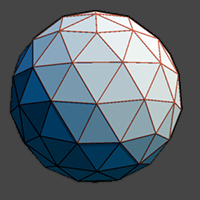
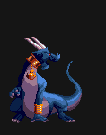
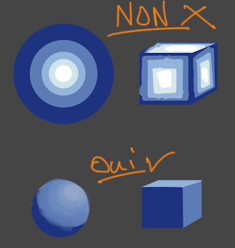
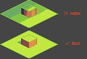
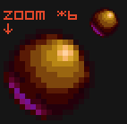
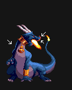
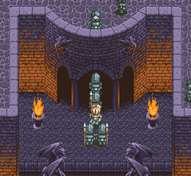

Cours de pixel art 5 : ombre et lumière
Aujourd'hui on passe de la 2D à la 3D tout en restant en 2D. Si. Vous allez voir (ou pas).
Avec ce dont nous avons parlé jusqu'ici, vous devriez être capable de faire de jolis linearts et de dessiner des décors avec une perspective correcte. C'est un bon départ mais vous vous doutez bien que ça ne suffit pas pour faire un pixel art.

Dans ce chapitre, nous allons nous occuper de shading. Il s'agit d'un ensemble de techniques qui vont nous permettre de sculpter nos décors et nos personnages pour représenter des reliefs ou des formes, bref des volumes (et je vous épargne mon traditionnel laïus sur l'importance capitale de ce chapitre, c'est juste super important).
Ça sort d'où ?
En fait, vous connaissez sans doute déjà la réponse à cette question. Ce qui fait que votre cerveau arrive à interpréter le volume des objets autour de vous, ce sont les variations de couleurs sur sa surface, qui résultent des différences d'éclairage entre les parties de votre objet. Pas besoin d'un projecteur halogène pour ça, le moindre petit reflet définit un volume : regardez autour de vous !
Ce croquis illustre le concept de manière simple : un objet (une sphère) est éclairé par une source de lumière (symbolisée par la flèche) et cela modifie ses couleurs. Les couleurs sont plus claires là où la sphère est directement exposée à la lumière et plus sombres dans les zones à l'ombre.
Remarquez que je ne parle ici que de couleurs claires et sombres, le prochain chapitre vous en dira plus sur la façon de les choisir précisément.

Ce qu'il est important de retenir c'est que j'ai choisi une source de lumière et que j'ai placé les zones d'ombre et de lumière (les highlights) en fonction de cette dernière. Si mon dessin avait été plus compliqué, j'aurais du faire attention à conserver ma source de lumière sur l'ensemble pour que le tout soit cohérent. Bien entendu, vous n'êtes pas obligé de placer la source de lumière en haut à droite, vous pouvez la mettre n'importe où.
Malheureusement, les choses ne sont pas toujours aussi simples que pour cette sphère : d'abord parce que les objets peuvent être dans l'ombre les uns des autres, ensuite parce que plus vos objets ont des formes complexes, plus il est difficile de faire apparaitre leurs volumes avec précision (surtout en pixel art) et enfin parce que la lumière a une fâcheuse tendance à rebondir (!) sur les objets, les murs et les sols. Au final, le bas de la sphère devrait un peu plus ressembler à ceci, parce que l'environnement a lui aussi tendance à renvoyer de la lumière sur la sphère :

Et moi je fais comment ?
Vous ? Hah ben vous faites pareil mais en pixel art, quelle question ! Mais comme je suis sympa, je vais quand même vous aider un peu. La première chose à faire est de choisir la position de votre source de lumière (ce sera le plus souvent en haut à droite/en haut à gauche puisque votre source de lumière sera la plupart du temps le soleil).
A partir de là, il faut réussir à faire preuve d'un peu d'abstraction : vous devez penser votre objet en 3 dimensions (et pas simplement comme un tracé sur votre écran) pour réussir à déterminer les zones qui seront « frappées » par la lumière (un peu / beaucoup / passionnément / à la folie / pas du tout) et les mettre en couleur en tenant compte de cela. Pour simplifier un peu le problème vous pouvez penser comme une bonne vieille Playstation (merci à Poupi pour l'image de sphère en 3D à ci-dessous) et découper dans votre esprit l'objet en différents polygones et réfléchir à l'éclairage de chacun d'eux. Comme ceci :

D'une manière générale, il faut commencer par établir les zones qui seront « globalement dans l'ombre » et celles qui seront « globalement éclairées » plutôt que de s'attaquer directement aux détails (mauvaise idée !). Il serait bon qu'au long du processus les contours noirs de votre lineart soient peu à peu remplacés par des couleurs utiles, ça vous fera de la place en plus pour ajouter des détails (un pixel de plus, ça n'a pas de prix !) et ça vous évite de les enlever à la fin sans trop savoir quoi en faire.
Pour l'exemple, revoilà le dragon du chapitre 1 (et vous allez encore le revoir plus tard). Je lui ai appliqué les techniques de shading décrites dans ce chapitre pour lui donner du volume (attention, il n'est pas fini pour autant !). Ma source de lumière étant situé à droite et un peu en hauteur, toute la partie à gauche du dragon est dans l'ombre, sauf sa main qui est plus proche de vous et qui s'extrait de la zone d'ombre créée par le corps. Pas grand chose d'autre à signaler : j'ai un peu amélioré le lineart à l'occasion mais rien de très important.

Deux erreurs à éviter
Le pillow-shading
Il n'y a qu'une seule excuse valable pour faire du pillow-shading : n'avoir jamais lu toutes ces théories sur les ombres et les lumières. C'est la démarche employée par les gens qui ont remarqué sur d'autres dessins qu'il faut utiliser des couleurs claires et des couleurs sombres, mais qui n'ont pas vraiment compris pourquoi ni comment les placer. D'instinct, ces gens se mettent à placer les couleurs claires au milieu des surfaces et les couleurs sombres sur les bords. Le résultat est totalement incohérent et AFFREUX.

Le désastre saute aux yeux sur des formes simples comme une sphère ou un cube, mais faites bien attention à ce que vous faites sur vos pixel arts. Si vous n'êtes pas habitué à placer des ombres, vous risquez d'avoir une tendance naturelle à faire ainsi lorsque votre attention baisse.
Comprendre sans avoir compris.
La seconde erreur à éviter concerne les gens qui ont lu ce genre d'articles (donc vous par exemple). Le raisonnement qui conduit à commettre cette erreur est le suivant : « Bon très bien je place ma source de lumière : en bas à droite. Ça c'est fait. Maintenant la couleur, bon ben, plus clair en bas à droite et plus foncé en haut à gauche et tout ira pour le mieux ».

Et non, mauvaise pioche ! En faisant ça le résultat est désastreux et dénué de volume. Pourquoi ? Parce qu'en plaçant ainsi les couleurs, on pense en deux dimensions et on ne tient pas compte de l'éclairage réel des choses. Il ne faut pas vouloir rajouter à tout prix des ombres et des lumières partout et très souvent les surfaces planes sont éclairées de façon uniforme. Ne cherchez pas à tout prix à replacer votre gamme complète d'ombres et de lumières dans chaque zone de l'image.
Pour se la péter dans les dîners mondains : l'ambient lighting.
Terminons notre rapide tour d'horizon avec une technique « qui fait genre ».

Dorénavant, vous êtes censé être capable de gérer une source de lumière. Bien. L'ambient lighting consiste à ajouter une seconde source de lumière le plus souvent colorée près de votre objet (ou de votre personnage). Il est préférable que cette seconde source de lumière ne soit pas placée dans la même direction que la première, pour deux raisons :
- Elle serait « noyée » dans la première source, et ne serait pas franchement visible
- Tout le charme de la seconde source de lumière vient du fait qu'elle éclaire les ombres et donne ainsi caractère extrêmement dramatique à la scène.
Attention toutefois, « éclairer les ombres » ne veut pas dire que les ombres sont plus claires (oui je sais, on aurait pu croire). Cela veut dire que l'on se retrouve avec des highlights « bien violents » au bord des zones les plus sombres et le cerveau humain appréciant les contrastes (si si), il a tendance à apprécier le résultat.
Voilà ce que ça donne sur la gueule de notre dragon, éclairée par les flammes (rawr rawr !), et sur son dos éclairé par une mystérieuse lueur bleue. Bien entendu, cette technique — comme toutes les techniques « qui font genre » est à utiliser avec parcimonie. Par ailleurs, évitez de vous jeter dessus dès vos premiers essais : commencez par maitriser l'utilisation d'une seule source de lumière avant de compliquer les choses.

Enfin, un petit exemple de ce que la technique permet de réaliser à plus grande échelle : voici un screenshot de Tales of Phantasia sur Super Nintendo, dans lequel les murailles et les colonnes éclairées par les torches fournissent une belle démonstration d'ambient lighting (la source de lumière « principale » étant le ciel).

Et voilà, nous sommes déjà (enfin « déjà » c'est pour vous, moi ça fait des plombes que je suis dessus) au bout de ce chapitre. Comme pour les précédents, entrainez vous et relisez le si tout ne vous parait pas clair. Je ne suis pas rentré dans le détail pour que ce tutorial reste centré sur le pixel art et pas sur l'art en général. Si la lumière vous intéresse et si vous savez parler anglais (ou si ne regarder que les images ne vous dérange pas), vous pouvez approfondir le sujet.
Ajouter un commentaire
Commentaires

Meme si ça date, pas mal ce cours, (j'ai pas fini de lire toutes les parties) mais juste la au debut t'as mis 2 fois : Dans ce chapitre, nous allons nous occuper de shading. Il s'agit d'un ensemble de techniques qui vont nous permettre de sculpter nos décors et nos personnages pour représenter des reliefs ou des formes, bref des volumes (et je vous épargne mon traditionnel laïus sur l'importance capitale de ce chapitre, c'est juste super important). Voilà juste pour le signaler ;) mais Gg, les explications sont claires et precises, bref c'est bien quoi :D bonne continuation

Pour l'ambient lighting c'est aussi par rapport aux lumières ambiantes absorbées par "l'objet", ça sert pas qu'à se la péter =P